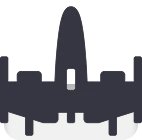
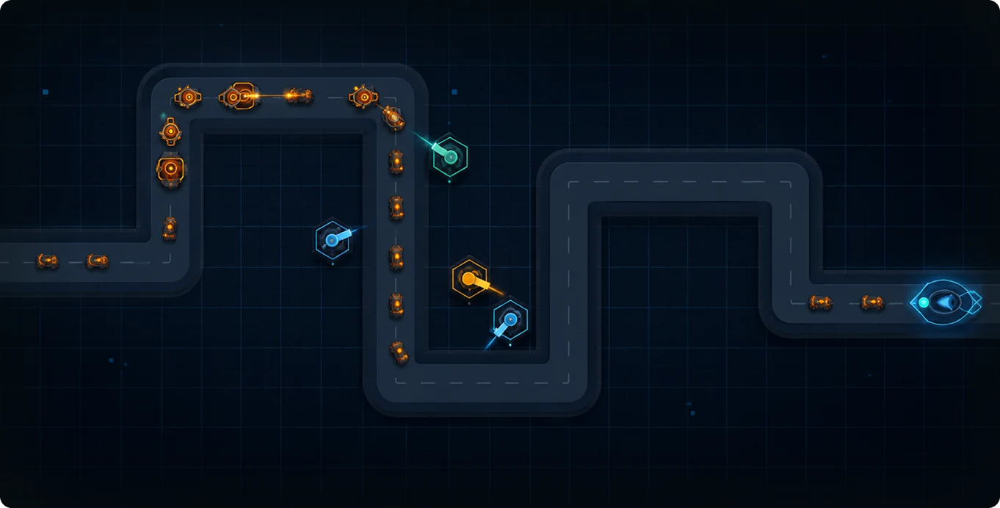
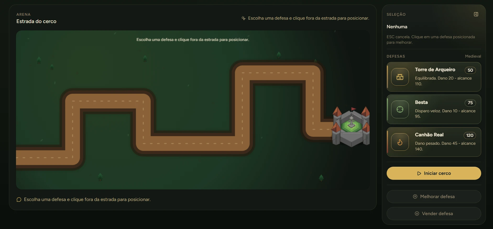
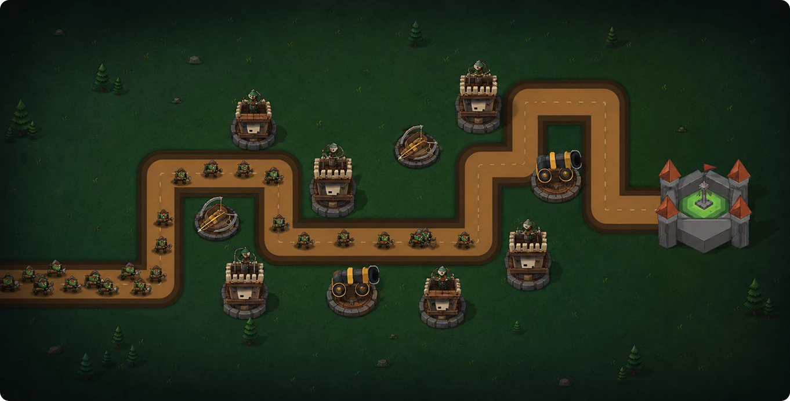

Modo Futurista
Domine rotas energizadas, use torres de pulso e segure ondas velozes antes que qualquer ameaça alcance o núcleo.

TOWER DEFENSOR
Posicione suas defesas, domine cada rota e sobreviva às ondas em dois universos. Escolha sua estratégia e supere seu recorde. Defenda sua base e sobreviva às ondas em dois universos.

Dois universos. Uma defesa.
Duas rotas, dois ritmos e uma arena feita para testar suas decisões
CONHECER TUTORIAL
Domine rotas energizadas, use torres de pulso e segure ondas velozes antes que qualquer ameaça alcance o núcleo.

Proteja o castelo com arqueiros, bestas e canhões enquanto hordas inimigas avançam pela estrada do cerco.

Precisão confiável para controlar a rota.
Uma opção confiável para começar a partida, controlar a rota e evoluir sem comprometer todos os seus créditos.
Hall da fama
Os cinco maiores resultados da arena, classificados por pontuação e pela maior onda superada.
CONQUISTAR MEU LUGARA lógica é simples de aprender e difícil de dominar: construa fora da rota, administre recursos e adapte sua estratégia a cada onda.
VER RECORDESDefenda o núcleo no modo Futurista ou proteja o castelo no modo Medieval.
Use uma unidade Básica, Rápida ou Pesada conforme a ameaça e seus recursos.
No desktop, clique fora da rota. No mobile, arraste até uma célula livre. Verde constrói; vermelho cancela.
As defesas atacam automaticamente os inimigos mais próximos da base. Não deixe nenhum atravessar.
Selecione unidades posicionadas para ganhar níveis ou vender e recuperar 70% do valor investido.
A cada três ondas concluídas, escolha uma melhoria roguelite e transforme sua estratégia.
COMANDOS RÁPIDOS
Use o teclado para selecionar, melhorar ou vender defesas sem perder o ritmo da partida.
Seleciona a defesa básica para iniciar sua estratégia.
Seleciona a defesa de maior cadência contra grupos de inimigos.
Seleciona a defesa de alto impacto para ameaças resistentes.
Vende a torre selecionada e libera espaço para uma nova estratégia.
Aprimora a torre selecionada para reforçar a defesa.